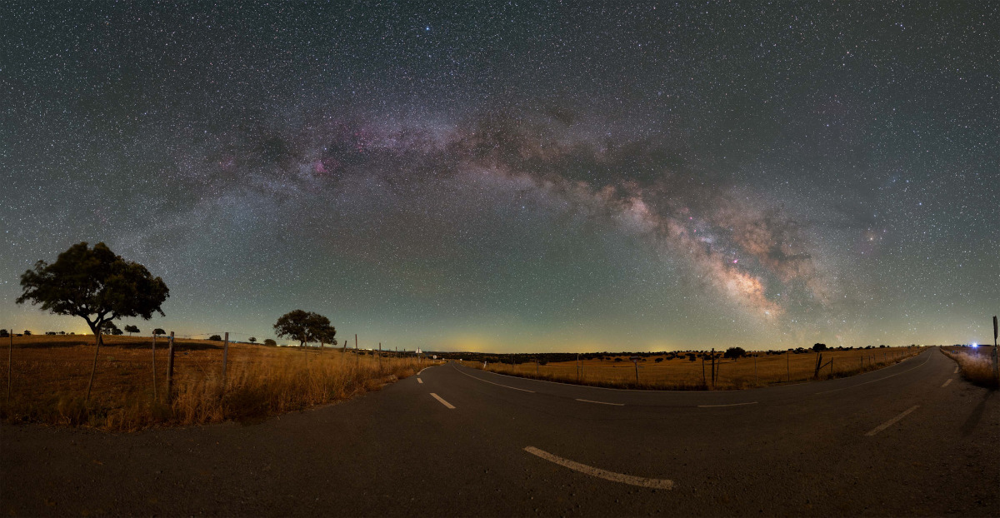

Astronomy Picture of the Day

The Road and the Milky Way
Image Credit & Copyright: David Cruz
Explanation: At night you can follow this road as it passes through the Dark Sky Alqueva reserve not too far from Alentejo, Portugal. Or you could stop, look up, and follow the Milky Way through the sky. Both stretch from horizon to horizon in this 180 degree panorama recorded on June 3. Our galaxy's name, the Milky Way, does refer to its appearance as a milky path in the sky. The word galaxy itself derives from the Greek for milk. From our fair planet the arc of the Milky Way is most easily visible on moonless nights from dark sky areas, though not quite so bright or colorful as in this image. The glowing celestial band is due to the collective light of myriad stars along the galactic plane too faint to be distinguished individually. The diffuse starlight is cut by dark swaths of the galaxy's obscuring interstellar dust clouds. Standing above the Milky Way arc near the top of this panoramic nightscape is bright star Vega, with the galaxy's central bulge near the horizon at the right.
Tomorrow's picture: pareidolia in space